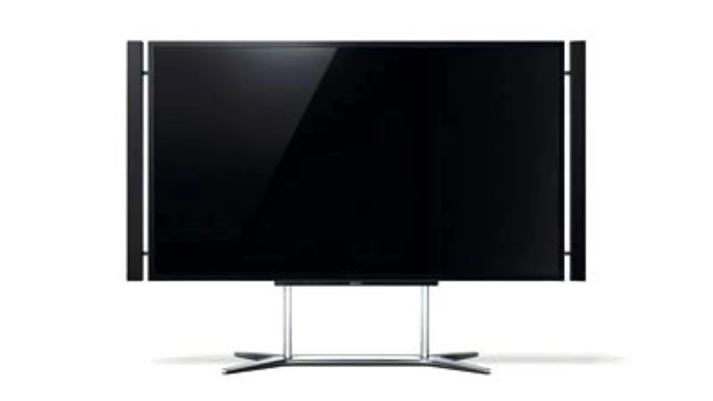

1. Ünite: İletişim
İletişim nedir?
İletişim; duygu, düşünce veya bilgilerin akla gelebilecek herhangi bir yöntemle aktarılmasıdır. İnsanlar genelde 3 farklı şekilde iletişime geçer.
- Sözlü İletişim
- Konuşarak yapılan iletişim türüdür.
- Yazılı İletişim
- Yazı ile yapılan iletişim türüdür.
- Sözsüz İletişim
- Jest ve mimikler kullanılarak yani beden diliyle yapılan iletişim türüdür.
İletişimin Gerçekleşmesi İçin 3 Altın Kural
- En az iki kişi olmalı
- Kişiler Birbirini Fark Etmeli
- İletilebilecek bir mesaj olmalı
Etkili İletişimin Sırrı!
- Aktarılan mesaj; kısa, net ve anlaşılabilir olmalıdır.
- İyi bir dinleyici olmak gerekir.
- Göz teması kurulmalıdır.
- Beden dili etkin kullanılmalıdır.
- "Sen" dili yerine "ben" dili kullanılmalıdır
- Karşı taraf tehdit edilmemelidir.
- Ön yargılı davranılmamalıdır.
- Lakap takılmamalı, alay edilmemelidir.
Medya ve Kitle İletişim Araçları
Medya: Gazete, dergi , radyo, televizyon ve genel ağ gibi kitle iletişim araçlarının tümünü kapsayan bir terimdir. Medya, günümüzde insanların iletişiminde önemli bir rol oynamaktadır.
Kitle İletişim Araçları ise birden fazla insana (kitle) aynı anda bilgi verebilen yani tek yönlü iletişim kuran araçlardır. Örnek olarak Telefon, Televizyon, bilgisayar, radyo örnek verilebilir.
Kitle İletişim Araçlarının Olumlu Yönleri
- Bilgilerin Ulaştırılma Hızı Aartar
- İnsanlar Arası Etkileşim Artar
- İnsanların Eğitilmesinde Etkendir
- Kamuoyunun Oluşturulmasını Sağlar
- Reklamlar Sayesinde Ürün Tanıtımı Yapılır
Kitle İletişim Araçlarının Olumsuz Yönleri
- Bağımlılık Sonucu Sosyalleşmeyi Azaltır
- Aile Bağlarını Zayıflatır
- Toplumdan Kopuk Birey Sayısı Artar
- Kültür Bozulumu Artar
- Yabancı Dilden Kelimeler Girmeye Başlar

Kitle İletişim Özgürlüğü Nedir?
İnsanların haber, bilgi ve düşünceleri iletişim araçları vasıtasıyla özgürce elde edebilmesidir.
Ben Dünyaları Ateşe Verecek Kıvılcımım.
Ben Zincirleri Kıracak Çekicim.
Ben Halkımın ve Esaret İçinde Yaşayan
Herkesin Umuduyum. Çünkü Biliyorum Ki
İNSAN KENDİNİ KÖLELEŞTİREN BİLGİSİZLİKLE ÖZGÜRLEŞEMEZ! - Kızıl Yükseliş
Ana Menü